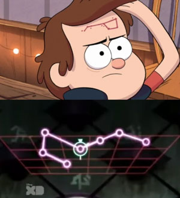
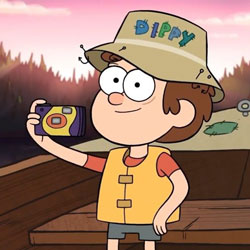
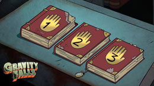

Dipper Pines is a fictional character, he is 12 years old and later turns 13 in the series, his real name is
Mason, but was given the nickname after his birthmark which is shaped like the Big Dipper. The world of
gravity falls is set in Oregon; it is a small unknown town that wouldn't be found on a map. It is surrounded
by forests and mountains. Most people would avoid it because of the creatures that are hidden inside, the
ancient mysteries and the dimensional anomalies.

Personality And Habits
Dipper's always had an adventurous spirit, he is determined to discover something new around him and after
being sent to this town he is invested in finding out what mysteries need to be true. His personality is
clever, curious, brave and rational, he is also protective of his twin sister Mabel and a great friend and
nephew to his Uncle Stan. A habit that he obtains is clicking his pen while he's deep in thought. He is most
mature and wiser than others in the series.

Knowledge And Skills
After wandering the woods in his area, Dipper finds a lost journal which details notes, scientific research,
countless creatures and secrets of Gravity Falls, it is a trademark for what he decides to do becoming a
guide for him to investigate. There are 3 journals in total and the other two are in the possession of other
characters. They all contain supernatural phenomena of Gravity Falls.

Associates
His main associates are his twin sister Mabel - whom he was born 5 minutes after, his Uncle Stan, his
friends and coworkers Wendy and Soos!